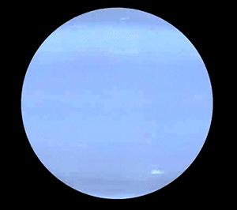

Neptuno
El nombre del planeta Neptuno, dios de los océanos para los romanos, en un proceso parecido al que tuvo lugar con Urano fue adoptado por consenso dentro de la comunidad de astrónomos. Neptuno, además, fue el primero de los planetas del sistema solar descubierto mediante cálculos matemáticos, ya que los antiguos, al igual que ocurrió con Urano, pensaban que se trataba de una estrella.
Oscuro, frío y regido por vientos supersónicos, el gigante de hielo Neptuno es el octavo y más distante planeta de nuestro sistema solar. Neptuno de hecho está tan lejos que es el único de los planetas del sistema solar que no es visible desde la Tierra a simple vista.